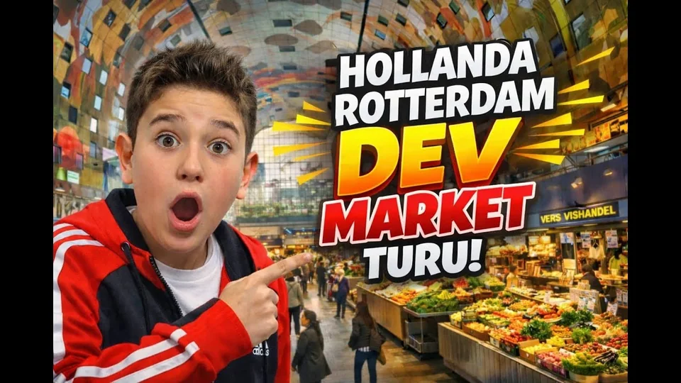
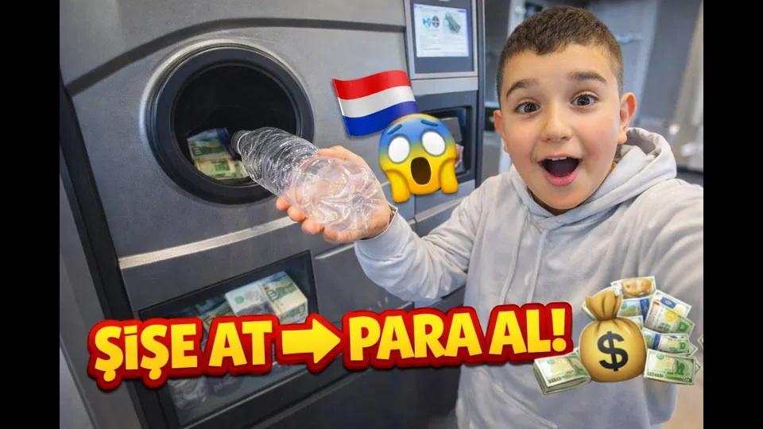
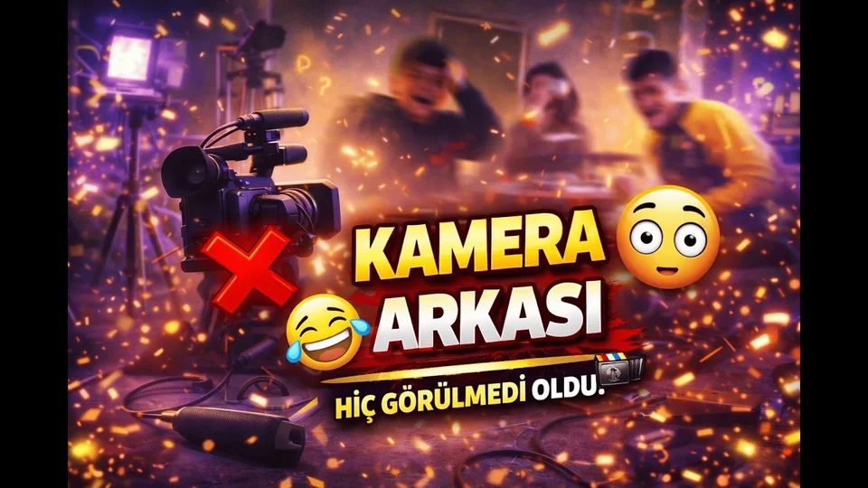

GEZİ DEFTERİ
Markthal Rotterdam’da İlk Kez Gezdik!
Şehir keşfi için kanal arşivinden bir durak. Kapak ve başlık Rotterdam’daki Markthal gezisini konu alıyor.
GEZİ / YAŞAM / KAMERA ARKASI
KAMERANIN GÖRDÜĞÜ DÜNYA
Bir şehirde ilk kez dolaşmak, küçük bir ayrıntıyı fark etmek, birlikte geçirilen günü kaydetmek. Alperix TV seçkisi, oyun dünyalarının dışında kendi ritminde ilerliyor.
Kanalı YouTube’da aç
GEZİ DEFTERİ / ROTTERDAM ↗KANAL ARŞİVİNDEN SEÇİLDİ
Bu seçki mevcut YouTube yayınlarından hazırlanmıştır. Başlıklar ve süreler kanal listesinden kontrol edildi; kapaklar mevcut resmî sitedeki görsellerdir. Yeni bölüm veya yayın takvimi ilanı değildir.
GEZİ DEFTERİ
Şehir keşfi için kanal arşivinden bir durak. Kapak ve başlık Rotterdam’daki Markthal gezisini konu alıyor.

2:03GÜNLÜK KEŞİF
Günlük yaşamın küçük bir ayrıntısı: şişe iadesi deneyimi. Geziye farklı bir gözle bakmak isteyenler için.
BİRLİKTE VAKİT
Kanalın gezi dışındaki günlük yaşam seçkisinden, bungalov ve havuz temalı bir gün.

5:57KAMERA ARKASI
Tamamlanmış bir videonun arkasındaki anlara ayrılan mevcut kanal yayını.
İZLEME DEFTERİ / EDİTORYAL NOTLAR
Bir gezi videosunu izlerken yalnız “neresi?” sorusuna odaklanma. Mekânın ölçeğini, insanların nasıl hareket ettiğini ve dikkatini çeken bir rengi not et. Rotterdam seçkisi için de aynı gözle bakabilir, izledikten sonra kendi üç cümleni kurabilirsin.
Bu bir güncel gezi veya fiyat rehberi değildir. Videoda görülen koşullar, çekildiği zamana aittir.
Şişe iadesi gibi gündelik bir deneyimi izlerken başlangıç, işlem ve sonuç adımlarını ayır. Sende aynı şekilde yapılan bir alışkanlık var mı? Benzerliği ve farkı düşünmek, kısa bir videoyu yeni bir soruya dönüştürür.
Videodaki deneyim, başka ülkeler veya bugün geçerli koşullar için bir kural ya da gelir vaadi olarak okunmamalı.
Yayımlanmış bir video seçilmiş anlardan oluşur. Kamera arkası seçkisine bakarken denemeler, duraksamalar ve tamamlanmış sahne arasındaki farkı düşün. Bir şey üretmenin yalnız son görüntüden ibaret olmadığını hatırlatan bir izleme biçimi.
Bu notlar siteye ait izleme önerileridir; videolardan alınmış alıntı veya yeni bir çekim duyurusu değildir.
Alperix TV burada gezi, günlük yaşam ve kamera arkası yayınlarıyla ele alınır. ProCinAlp oyunları ayrı oyun vitrininde kalır. Bu bölüm başka bir kanalın adıyla birleştirilmez.
Videolar otomatik başlamaz ve sayfaya YouTube oynatıcı gömülmez. Bir kapağa ya da başlığa dokunduğunda YouTube’a geçersin; o hizmetin gizlilik uygulamaları geçerli olur.
Kanalın tüm videolarıAna seçkiye dön